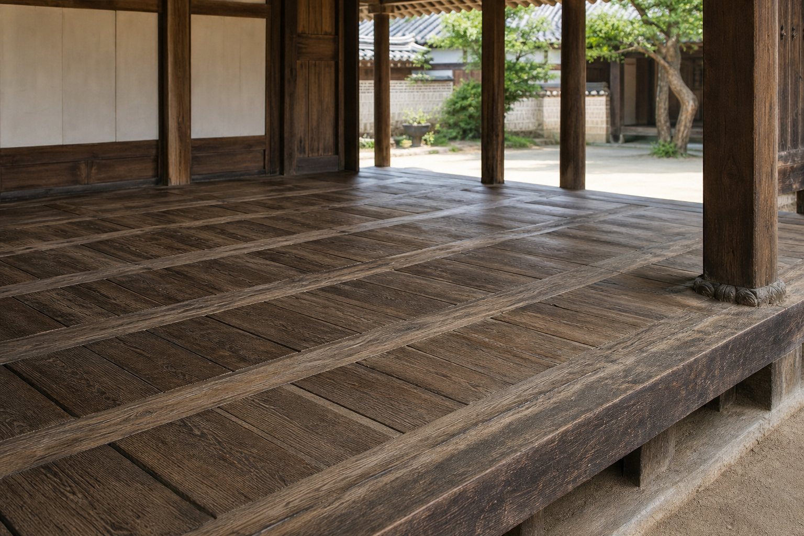

한옥 우물마루가 바닥을 짜는 방식

한옥의 대청마루를 보면 바닥이 단순히 널판을 길게 깔아 놓은 면처럼 보이지 않습니다. 일정한 간격의 굵은 목재가 가로세로로 지나가고, 그 사이에 짧은 판재가 가지런히 끼워져 있습니다. 이 형식이 흔히 말하는 우물마루입니다. 이름처럼 한자의 우물 정(井)자를 닮은 격자 바탕 위에 바닥판을 넣어 완성하는 방식입니다. 멀리서 보면 차분한 무늬이고, 가까이서 보면 구조와 마감이 한 장면 안에 함께 드러납니다.
우물마루는 한옥의 생활 방식과 잘 맞물립니다. 대청은 방과 방 사이에 놓여 마당을 향해 열리고, 가족의 일상과 손님맞이, 의례와 휴식이 겹치는 공간입니다. 바닥은 발을 딛는 면이면서 동시에 시선이 가장 오래 머무는 넓은 목재 표면입니다. 그래서 우물마루의 아름다움은 장식만으로 설명하기 어렵습니다. 걸을 때의 안정감, 판재가 반복되는 리듬, 기둥과 벽체 사이에서 바닥이 정리되는 방식이 모두 맞물려 대청의 분위기를 만듭니다.
귀틀이 먼저 바닥의 질서를 만듭니다
국가한옥센터는 한옥 시공 설명에서 마루를 판재를 깔아 마감한 바닥으로 설명하고, 우물마루는 귀틀과 마루널이 우물정자 모양을 만드는 형식이라고 정리합니다. 여기서 핵심은 판재가 아니라 귀틀입니다. 귀틀은 마루의 뼈대입니다. 먼저 긴 부재인 장귀틀이 놓이고, 그 사이를 짧은 부재인 동귀틀이 직각으로 가로지릅니다. 이 두 부재가 격자를 만들면 그 안에 청판이라고 부르는 마루널을 끼워 바닥면을 완성합니다.
장귀틀은 대체로 앞 기둥과 뒤 기둥 사이를 길게 연결하는 방향으로 놓입니다. 동귀틀은 장귀틀 사이를 일정한 간격으로 나누어 청판이 들어갈 자리를 만듭니다. 이 순서를 보면 우물마루가 판을 넓게 붙여 만든 바닥이 아니라, 먼저 기준선을 만들고 그 기준 안에 작은 판재를 넣는 바닥이라는 점이 분명해집니다. 가구 제작으로 비유하면 넓은 문짝의 면재를 그대로 세우는 대신, 프레임을 먼저 짜고 안쪽 패널을 안정적으로 끼우는 방식과 가깝습니다.
청판은 고정된 면이 아니라 끼워진 면입니다
우물마루에서 청판은 단순한 덮개가 아닙니다. 동귀틀 사이에 들어가 바닥의 실제 면을 만드는 판재입니다. AURI의 한옥 시공 핸드북(4) - 우물마루는 우물마루를 하인방과 장귀틀로 구성된 마루틀 내부에 동귀틀을 결구하고, 짧게 자른 마룻널을 끼워 넣어 바닥면을 구성하는 마루로 설명합니다. 이 설명에서 중요한 말은 "끼워 넣는다"입니다. 판재는 주변 골격과 관계를 맺으며 놓이고, 전체 바닥은 여러 작은 면의 조합으로 완성됩니다.
이 방식은 시각적으로도 안정적입니다. 긴 판재가 한 방향으로만 뻗으면 바닥은 길이감이 강해지고 공간이 한쪽으로 흐르는 인상을 줍니다. 반면 우물마루는 장귀틀과 동귀틀이 간격을 나누고, 청판이 그 사이에 들어가면서 바닥을 여러 개의 작은 장면으로 분절합니다. 대청처럼 넓고 비어 있는 공간에서는 이런 분절이 중요합니다. 비어 있음이 허전해 보이지 않고, 목재 바닥 자체가 차분한 질서를 갖게 됩니다.
격자는 하중과 시선을 함께 정리합니다
우물마루의 격자는 눈에 보이는 무늬이면서 동시에 발을 받는 구조입니다. 사람이 걷고 앉고 물건을 놓을 때 바닥에는 반복적인 힘이 가해집니다. 장귀틀과 동귀틀은 그 힘을 한 장의 판재에만 맡기지 않고 여러 부재로 나누어 받게 합니다. 청판은 면을 만들고, 귀틀은 그 면이 놓일 자리를 정합니다. 구조와 마감이 완전히 분리되지 않는 셈입니다.
좋은 가구에서도 같은 원리가 보입니다. 넓은 상판, 문짝, 서랍 앞판을 만들 때 중요한 것은 표면을 넓게 확보하는 일만이 아닙니다. 그 면을 어디서 지지할지, 반복되는 선을 어떻게 맞출지, 사용자가 보는 방향에서 구조가 불안하게 드러나지 않는지도 함께 결정해야 합니다. 우물마루는 바닥 전체를 하나의 큰 판으로 숨기지 않습니다. 필요한 부재를 드러내고, 그 드러난 선이 곧 질서가 되도록 만듭니다.
대청의 개방감은 바닥의 단정함에서 시작됩니다
대청은 닫힌 방과 열린 마당 사이에 놓인 중간 공간입니다. 벽으로 가득 막히지 않고, 기둥과 처마와 바닥이 공간을 부드럽게 한정합니다. 이때 바닥의 역할은 생각보다 큽니다. 우물마루의 격자는 사람이 앉을 자리와 걸을 길을 직접 표시하지 않지만, 몸은 자연스럽게 그 간격을 읽습니다. 목재의 선이 반복되면 넓은 대청에서도 중심과 가장자리, 안쪽과 바깥쪽의 감각이 생깁니다.
한옥을 볼 때 흔히 지붕의 곡선이나 창호의 살대를 먼저 떠올리지만, 실제 생활의 감각은 발바닥 아래에서 시작되는 경우가 많습니다. 우물마루는 차갑고 단단한 바닥이 아니라, 목재 부재가 촘촘히 맞물린 생활의 기반입니다. 마당을 향해 열린 공간에서 바닥의 격자는 시선을 지나치게 붙잡지 않으면서도 공간이 흩어지지 않게 합니다. 이것이 대청마루가 비어 있어도 빈약해 보이지 않는 이유 중 하나입니다.
가구 제작에 주는 힌트
우물마루를 현대 가구에 그대로 옮겨 올 필요는 없습니다. 그러나 그 사고방식은 여전히 유효합니다. 첫째, 큰 면을 만들 때는 면 자체보다 면을 잡아 주는 기준 구조를 먼저 생각해야 합니다. 둘째, 반복되는 선은 장식이 아니라 사용감을 안정시키는 장치가 될 수 있습니다. 셋째, 부재가 보인다면 숨기지 못한 흔적이 아니라 의도된 질서로 읽히도록 간격과 비례를 정리해야 합니다.
예를 들어 넓은 수납장의 문짝, 긴 벤치의 좌판, 낮은 테이블의 하부 구조를 설계할 때 우물마루의 태도를 떠올릴 수 있습니다. 가로와 세로의 기준이 먼저 잡히면 판재는 더 안정적으로 보이고, 사용자는 가구를 더 믿음직하게 느낍니다. 좋은 목가구는 단지 표면이 깨끗한 물건이 아닙니다. 표면 아래의 힘의 흐름과 표면 위의 시선의 흐름이 서로 어긋나지 않는 물건입니다.
보이는 구조가 오래 남습니다
우물마루가 매력적인 이유는 오래된 형식이기 때문만은 아닙니다. 구조가 생활의 표면으로 자연스럽게 올라와 있기 때문입니다. 장귀틀과 동귀틀은 감추어진 골조가 아니라 바닥의 선이 되고, 청판은 그 선 사이에서 발을 받는 면이 됩니다. 눈에 보이는 것과 몸이 느끼는 것이 크게 다르지 않습니다. 이 정직함이 한옥 목구조의 큰 장점입니다.
목간이 원목 가구를 볼 때 중요하게 생각하는 지점도 여기에 닿아 있습니다. 목재의 결, 부재의 두께, 반복되는 간격, 손과 발이 닿는 높이는 모두 사용자의 하루 안에서 천천히 읽힙니다. 우물마루는 바닥 하나에도 구조와 생활, 비례와 촉감이 함께 있어야 한다는 사실을 보여 줍니다. 한옥의 대청을 걸을 때 발아래의 격자를 한 번 더 바라보면, 좋은 가구가 왜 먼저 구조적으로 단정해야 하는지 조금 더 분명해집니다.